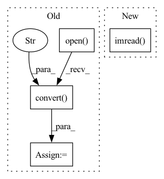

Pattern ID :2290

Before Change
print(f"Processing `{os.path.abspath(lr_image_path)}`...")
lr_image = Image.open(lr_image_path).convert("RGB")
hr_image = Image.open(hr_image_path).convert("RGB")
// Extract RGB channel image data
lr_tensor = imgproc.image2tensor(lr_image, range_norm=False, half=True).to(config.device).unsqueeze_(0)
hr_tensor = imgproc.image2tensor(hr_image, range_norm=False, half=True).to(config.device).unsqueeze_(0)
// Only reconstruct the Y channel image data.
with torch.no_grad():
sr_tensor = model(lr_tensor).clamp_(0, 1)
// Cal PSNR
sr_y_tensor = imgproc.convert_rgb_to_y(sr_tensor)
hr_y_tensor = imgproc.convert_rgb_to_y(hr_tensor)
total_psnr += 10. * torch.log10(1. / torch.mean((sr_y_tensor - hr_y_tensor) ** 2))
sr_image = imgproc.tensor2image(sr_tensor, range_norm=False, half=True)
After Change
print(f"Processing `{os.path.abspath(hr_image_path)}`...")
// Read LR image and HR image
lr_image = cv2.imread(lr_image_path, cv2.IMREAD_UNCHANGED).astype(np.float32) / 255.0
hr_image = cv2.imread(hr_image_path, cv2.IMREAD_UNCHANGED).astype(np.float32) / 255.0
// Convert BGR image to Y image
hr_y_image = imgproc.bgr2ycbcr(hr_image, use_y_channel=True)
In pattern: SUPERPATTERN
Frequency: 3
Non-data size: 4
Instances
Fragment ID: 9748021
Project Name: lornatang/srgan-pytorch
Commit Name: 231bd74d21d7f532fd746f4a1cb8fb3bc008c933
Time: 2022-03-03
Author: liuchangyu1111@gmail.com
File Name: validate.py
M Class Name: AnonimousClass
N Class Name: AnonimousClass
M Method Name: main(0)
N Method Name: main(0)
M Parent Class:
N Parent Class:
M File Name: validate.py
N File Name: validate.py
M Start Line: 28
M End Line: 82
N Start Line: 33
N End Line: 91
'>
Before Change
print(f"Processing `{os.path.abspath(lr_image_path)}`...")
lr_image = Image.open(lr_image_path).convert("RGB")
hr_image = Image.open(hr_image_path).convert("RGB")
// Extract RGB channel image data
lr_tensor = imgproc.image2tensor(lr_image, range_norm=False, half=True).to(config.device).unsqueeze_(0)
hr_tensor = imgproc.image2tensor(hr_image, range_norm=False, half=True).to(config.device).unsqueeze_(0)
// Only reconstruct the Y channel image data.
with torch.no_grad():
sr_tensor = model(lr_tensor).clamp_(0, 1)
// Cal PSNR
sr_y_tensor = imgproc.convert_rgb_to_y(sr_tensor)
hr_y_tensor = imgproc.convert_rgb_to_y(hr_tensor)
total_psnr += 10. * torch.log10(1. / torch.mean((sr_y_tensor - hr_y_tensor) ** 2))
sr_image = imgproc.tensor2image(sr_tensor, range_norm=False, half=True)
After Change
print(f"Processing `{os.path.abspath(hr_image_path)}`...")
// Read LR image and HR image
lr_image = cv2.imread(lr_image_path, cv2.IMREAD_UNCHANGED).astype(np.float32) / 255.0
hr_image = cv2.imread(hr_image_path, cv2.IMREAD_UNCHANGED).astype(np.float32) / 255.0
// Convert BGR image to Y image
hr_y_image = imgproc.bgr2ycbcr(hr_image, use_y_channel=True)
'>
Fragment ID: 9748022
Project Name: lornatang/esrgan-pytorch
Commit Name: 087e0c9bc621989889918b52b7c0dba9485c5fd6
Time: 2022-03-06
Author: liuchangyu1111@gmail.com
File Name: validate.py
M Class Name: AnonimousClass
N Class Name: AnonimousClass
M Method Name: main(0)
N Method Name: main(0)
M Parent Class:
N Parent Class:
M File Name: validate.py
N File Name: validate.py
M Start Line: 28
M End Line: 82
N Start Line: 30
N End Line: 91
'>
Before Change
def default_loader(path):
pil_image = Image.open(path).convert("RGB")
return cv2.cvtColor(np.array(pil_image), cv2.COLOR_RGB2BGR)
def disparity_loader(path):
After Change
def default_loader(path):
return cv2.imread(path, 1)
def disparity_loader(path):
return np.load(path).astype(np.float32)
'>
Fragment ID: 9748030
Project Name: amrelsersy/stereo-3d-detection
Commit Name: aac4289bc271ac2e9899f87b91f8083473708c59
Time: 2021-05-27
Author: mamoanwar97@gmail.com
File Name: Models/AnyNet/dataloader/KITTILoader3D.py
M Class Name: AnonimousClass
N Class Name: AnonimousClass
M Method Name: default_loader(1)
N Method Name: default_loader(1)
M Parent Class:
N Parent Class:
M File Name: Models/AnyNet/dataloader/KITTILoader3D.py
N File Name: Models/AnyNet/dataloader/KITTILoader3D.py
M Start Line: 22
M End Line: 23
N Start Line: 22
N End Line: 22